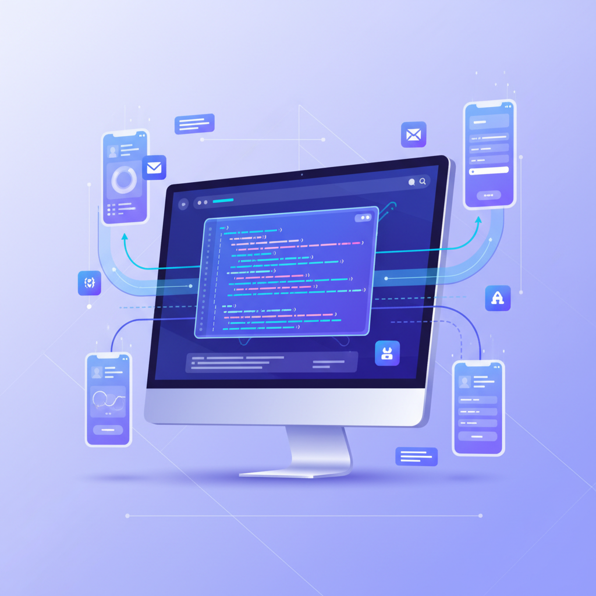

데이터 헌터에서
실무 자동화 개발자로
웹 스크래핑 & AI 앱 개발 실무 과정
프로들은 데이터를 이렇게 활용할까?
혼자선 막막했던 스크래핑과 자동화...
끝까지 함께하는 안내자, 개발자 강사와 함께라면 가능합니다.
📅 언제든지 시작 가능한 온라인 강의
👥 전문가 1:1 피드백 & 실무 코칭
💰 온라인1+2 패키지 | 259,000원
프로그램 소개
1인 개발자와
실무 자동화를 원하는 분들을 위한
특별한 데이터 활용
마스터 과정입니다.

이런 고민 있으셨죠?
API 없는 사이트 데이터 추출의 어려움
수작업 리뷰 답변의 시간 소모
복잡한 개발 환경 설정의 벽
혼자선 막막한 자동화 구현
실무에 바로 쓸 수 있는 앱 개발 스킬 부족

혼자선 너무 어려워요...
개발 지식도 부족하고,
어디서부터 시작해야 할지 모르겠고,
실무에 바로 쓸 수 있는 스킬을 배우고 싶은데...

해결과 가치
API 없어도 데이터 추출 가능
Gemini AI로 자동 댓글 생성
내가 만든 앱, 실무에 바로 적용
온라인 + 오프라인으로 학습·실습 보완
끝까지 함께하는 강사 피드백
강의 소개
실무에 바로 적용할 수 있는 데이터 자동화 개발 과정
입문
웹 데이터 스크래핑 & Electron 앱 개발
API 문서 없는 사이트에서도 데이터를 가져오고, 뉴스·블로그·부동산 데이터를 스크래핑해 앱으로 구현하는 과정.
(1주 1시간씩 4주간)
(1주 1시간씩 4주간)
₩159,000
커리큘럼
1
개발 환경 세팅 (VSCode, Node.js, GitHub, Electron)
2
웹 스크래핑 기초 (cURL, Postman, DevTools)
3
뉴스 요약 AI 앱 만들기 (빅카인즈 → Gemini API)
4
데이터 헌터 되기 (블로그, 뉴스, 부동산, 리뷰 분석)

심화
네이버 리뷰 자동 답변 앱 제작
네이버 스마트스토어 리뷰를 불러와 AI가 자동으로 답변까지 등록하는 실무형 앱 제작.
(1주 1시간씩 4주간)
(1주 1시간씩 4주간)
₩179,000
커리큘럼
1
리뷰 요청 추적 & 쿠키 인증 이해
2
리뷰 관리 앱 구현 (불러오기 + 댓글 등록)
3
Gemini AI 맞춤형 답변 생성
4
리뷰 일괄 처리 기능 구현

원데이 클래스
프라임 실습반: 앱 완성과 소스코드까지
온라인1+2 핵심 요약 + 심화 실습, 하루 만에 앱 완성과 소스코드 제공.
PREMIUM
₩590,000
커리큘럼
1
환경 세팅 점검
2
온라인1 핵심 실습
3
온라인2 핵심 실습
4
Gemini API 연동
5
리뷰 관리 앱 고도화
6
앱 소스코드 제공 & Q&A
강사 소개

"저는 화려하지 않아도, 끝까지 함께하는 사람이고 싶습니다."
엑셀 자동화에서 출발해 지난 몇 년간 프로그래밍과 데이터 스크래핑에 몰입했습니다.
혼자라면 막막할 길도, 함께라면 분명히 건널 수 있습니다.
💡 실무 중심의 교육철학으로 여러분의 자동화 개발 여정을 끝까지 함께합니다.
가격 안내
온라인 강의
온라인1
₩159,000
-
API 없는 사이트 데이터 추출
-
뉴스/블로그/부동산 스크래핑
-
Electron 앱 UI 제작
-
Gemini API 코멘트 생성
온라인2
₩179,000
-
네이버 리뷰 요청 추적 & 쿠키 인증
-
리뷰 관리 앱 직접 제작
-
AI 맞춤형 답변 자동화
-
리뷰 일괄 처리 기능 구현
인기
패키지 (온라인1+2)
₩299,000
₩259,000
15% 할인
-
온라인1 + 온라인2 모든 내용
-
완전한 자동화 개발 과정
-
두 앱 모두 완성
-
종합적인 실무 경험
오프라인 강의
오프라인 원데이
₩590,000
-
온라인1+2 VOD 포함
-
6시간 몰입 실습
-
완성 앱 소스코드 제공
-
1:1 피드백 케어
자주 묻는 질문

뉴스 긁고, 리뷰 달고, 앱까지 완성.
끝까지 함께하는 안내자와 지금 시작하세요.
실무 즉시 적용 가능
완성된 앱 소스코드 제공
끝까지 함께하는 피드백